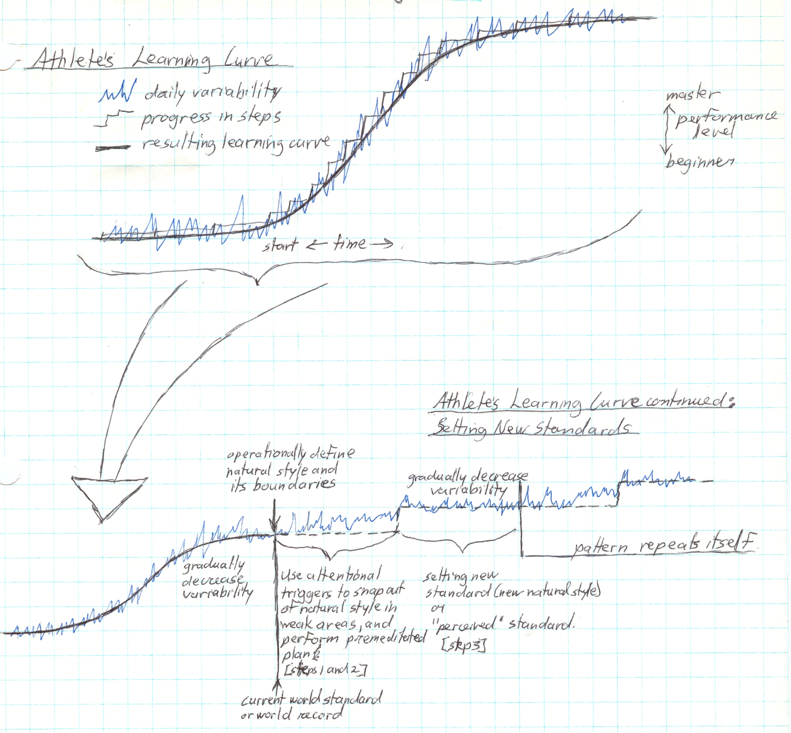
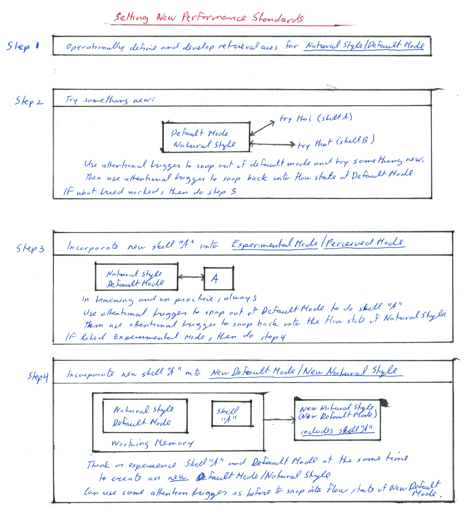
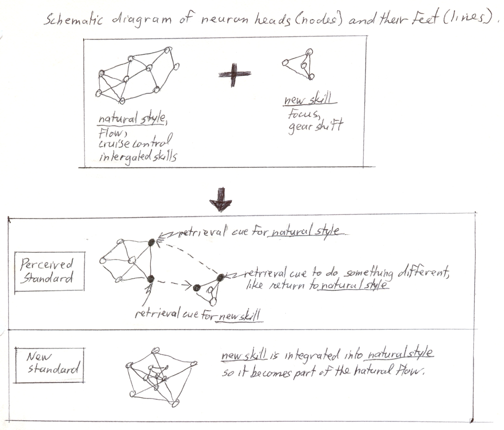
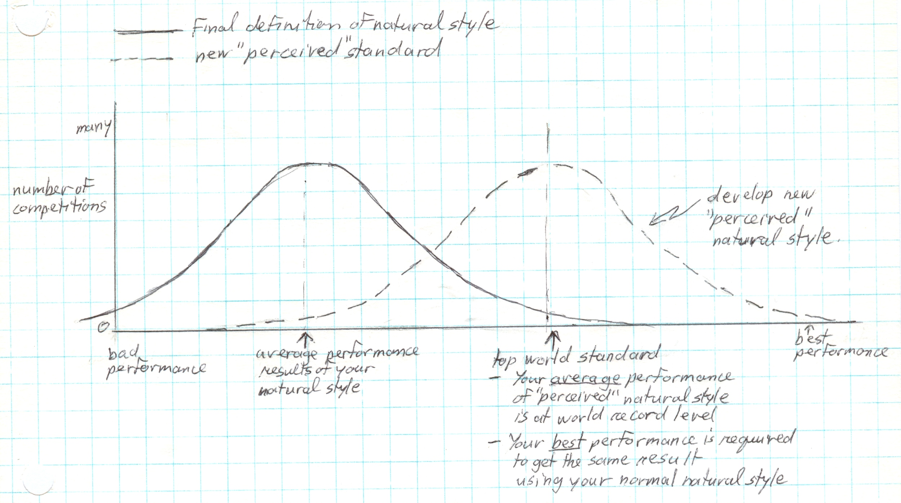

|
ch9 Self-Directed Coaching Manual
ch 9 SETTING NEW PERFORMANCE STANDARD
REACHING PERSONAL AND WORLD RECORDS As elite athletes, our goal is to achieve a zen-like state of flow as we do our sport. For example, a martial artist learns various moves and initiatives that can be used in attack situations. There are infinite number of attack situations which all can be counterattacked with moves learned. So there is a predefined, highly integrated model for martial art that is effective in all attacks and counter attacks. Still, we may want to go beyond our predefined model. Perhaps to break a world record, or perhaps to compensate for body type. Unique individualized style evolve in world class athletes, which take into account the athlete’s physical abilities, skills, previous and current learning, and personality. Each of these styles has its boundaries of what we can and cannot do. In tough competition, we may want to “push the envelope”,meaning we want to break our natural boundaries. We may conclude that it is the only way we could win. This section will discuss how to break our boundaries in a controlled, and hence safe, manner. Procedural Steps Recall from chapter 5, Athletic Development, we saw the graphic representation of the athlete’s s-shaped learning curve. Refer to figure 9-1, “Extending the S-Curve”. On top I have redrawn the same athletes learning curve. The daily variability is in blue. The average of daily variability shows progression is in steps, while the resulting learning curve is the predictable s-shape. Let’s assume we are at the highest level of the learning curve, and we still want to improve. The bottom graph magnifies the top end of the learning curve, so we can dissect and understand how to go about this. So let’s move along this graph from left to right. Now we are at the top step of the s-curve. Our variability is little, our step is solid and we are ready to move up to the next. We start by operationally defining our default mode and its boundaries at this point. For the best athletes, this could also be the current world standard or world record. Now we strategize our next step, and would like to give it a try. The problem is that we do not know for sure if it will work. Worst, if it does not work, and we have learned this non-working, or partially-working thing, it will start to interfere with our default mode. Yikes! To get around this, I have strategized a method to create an experimental mode, that we can experiment with, before committing it to our current default mode. So to start the creation of our new next step, we use attentional triggers to snap out of default mode in our weak areas, and perform our new premeditated plan. This is described in more detail in the procedural steps 1 and 2, of figure 9-2, which I will explain soon. But now, I’d like to point out the graph. I have drawn our resulting learning curve as a continuum of where we were, using a dotted line. Now note that the blue line describing variability in performance. Notice how its variability has sharply increased again as we try to reach the next step. With time, the variability in performance using this new premeditated plan, starts to decrease, and we can start to notice a new natural step in improvement. I call this our experimental mode, which we can later turn into our new default mode. From here, the pattern repeats itself. If our new new premeditated plan is working, our natural step will form, demonstrated by the decrease in variability in performance. If our new premeditated plan is not working, then no new natural step will form. So we nurture progress, we cannot force it. What we can control is our ability to measure and understand what is happening, which is what this procedure demonstrates. Now I will go through the whole process again, using figure 9-2, “Procedural Steps to New Standard”, as a reference. The procedure has 4 steps. Step 1 tells us to operationally define our current level of performance. It is assumed that we have developed reliable retrieval cues for our default mode. Step 2 is the experimentation part. We try different things to see if our performance improves. In the diagram, our current definition of our default mode is bounded. Then we try “skill A”, and then we try “skill B”. To try “A” and “B” without creating interference, we use attentional trigger to snap out of our default mode and try something new. Then use an attentional trigger to snap back into our flow state of our default mode. This is demonstrated in fig 9-3 neurological diagram, discussed later. Recall from chapter 7, “Attentional Strategies”, the concept of focus and flow. “Flow” is our natural style, and “focus” is a retrieval cue of some sort that we deliberately think of to cue us to do something different. Then we use another premeditated retrieval cue to get us to snap back into our natural flow state. If what we tried worked, then we do step 3. Step 3 incorporated our new technique into a trial experimental mode. I also call this a perceived mode, because to the outside observer, we will look like we have learned and incorporated the new skill into our default athletic style, but in reality, we have not. We are still tweaking and experimenting with our new skill. It’s very quick to learn the new skill up to this point, but it is not yet part of our permanent natural flow state, that we can perform with “zen”. So let’s start with incorporating our new skill “A” into a new perceived default mode. I have drawn 2 entities. Our current default mode, and our new skill “A”. In the same way as we did in step 2, we use attentional triggers to snap out of our default mode to do skill “A”. Then use another attentional trigger to snap back into the flow state of our default mode. So now to the observer, it looks like we have a new skill working in synch with our default mode. If we are pleased with our new experimental/perceived mode, we can finally incorporate our new skill “A” into our new default mode. In step 4, we incorporate our new skill “A” into our new standard, called new natural style or new default mode. Recall from chapter 6, “Learning”, that when 2 things are in working memory at the same time, they associate together. The longer we keep them there by rehearsal, the better they associate, and get put into long term memory, at which point it is learned. So it follows that thinking or experiencing our default mode and our new skill “A” in working memory at the same time, that they will associate, so with time our new default mode will now include skill “A”. Skill “A” is now part of our flowy default mode style. Figure 9-1: Extending the S-Curve 
Figure 9-2: Procedural Steps to New Standard 
Neurological Explanation Figure 9-3, “Neurology of Creating New Standards”,has the same procedure drawn out at the neurological level. In the top box we see our default mode as a large network of neurons. This includes all the smooth aspects of our performance using concepts previously discussed, such as flow, cruise control and integrated skills. We want to add a new skill, which is a much smaller network of neurons. We have to consciously concentrate to do this skill, and to trigger it to happen at the appropriate time. This used concepts previously discussed, such as focus and gear shift. We like our new skill, so now start the process of creating a “perceived experimental mode”. Notice, in the neurological diagram, that the new perceived mode is held together by the conscious control of retrieval cues. Also notice the sequence in which the retrieval cues are triggered. The default mode has a trigger retrieval cue for the new skill, the new skill is performed, at which point it has a retrieval cue to do something different, like return back to the default mode. The default mode has a retrieval cue to initiate it to start up again. So our ability to deliberately create retrieval cue triggers for all kinds of movements is a very powerful tool. The default mode and new skill are working harmoniously together, but are not actually part of each other. In the diagram below, the default mode and new skill, do become part of each other neurologically. This is our new standard and it is now all part if the natural flow of our default mode. Figure 9-3: Neurology of Creating New Standards 
Normal Curves Now that I have explained the procedure to create new performance standard, I will now apply this idea with a couple of practical examples. Let’s talk again about what it means to break a world record. Practically speaking, we have to do something that no one else has done before. So we have to figure out how we are going to do this, and we would have to snap out of flow in area where we need super power to break the record. Figure 9-4, “Normal Curves of Default Mode and New Standard”, shows a graph with 2 normal curves. The one on the right is our default mode with its average performance defined at the apex of the curve. The curve slopes to the right, and we see that once in a blue moon, our bodies have managed to achieve what is the top world standard. This gives us hope. We can now define our new “perceived default mode” at the same location as the top average world performance. If the perceived mode is satisfactory, we can then make it our new standard. Figure 9-4: Normal Curves of Default Mode and New Standard 
[end of chapter 9] SDCM home |